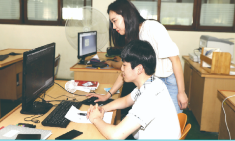

1. 학과 소개
제조 공정기술개발단계로 넘어가기 전, 기구물디자인 확정을 위해 PC모니터사으이 기구물 설계 형상을 샘플로 직접
제작 후, 설계 형상의 실물 제조적합성을 확인하는 공정인 목업(Mock-up)기술의 교육훈련 필요성이 있다는
제조업계 요구사항을 반영하여, 3D모델링 작업 및 3D프린팅 목업 기술교육을 동시에 실시하면서, 기구물 조립 시에
나타나는 기구물 설계 형상 자체 및 부품 조립성의 문제점을 파악 후, 모델링 작업단계에서 개선 반영시킬 수 있는
융합 인재를 양성하는 3D융합설계과.
2. 전공 과목
기계기초공작, 기초제도(CAD), 기계제도(INVENTOR), 기계요소설계, 3D프린터용제품제작, 가전기기기구개발
3. 실습내용
기초가공, 기계요소설계, 3D프린터운용, 3D응용제품모델링 등
4. 취득 자격증
전산응용기계제도기능사, 3D프린터운용기능사, 3D응용제품모델링기능사
5. 출처
-
경기기계공업고등학교 홈페이지